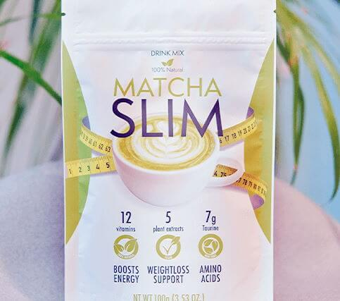
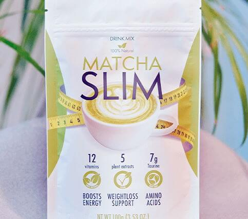

Wir haben ziemlich viele Leserbriefe erhalten. "Ich kann nicht abnehmen" ist der häufigste Betreff vor dem Sommerurlaub. Anscheinend brauchen Sie dringend Hilfe von unserem Ernährungsberater!

"Vor einem Jahr habe ich damit begonnen, kein Fast Food und keine Süßigkeiten mehr zu essen. Ich gehe dreimal die Woche ins Fitnessstudio, mache täglich Bauchtraining und gehe jeden Morgen joggen. Und trotz all dieser Bemühungen nehme ich kaum ab. Ich habe in diesem Jahr nur 6kg abgenommen, möchte aber 10-12kg abnehmen. Was soll ich tun?"
Marie, 32 Jahre
"Ich möchte schon seit meiner Kindheit ständig abnehmen. Ich esse nicht viel und habe eine schwere körperliche Arbeit. Nach der Arbeit spiele ich Volleyball oder gehe schwimmen. Und trotzdem bleibe ich dick! Trotz meines aktiven Lebensstils bleibt mein Körpergewicht bei 82 kg und ich kann nicht abnehmen. Esse ich aber einmal eine bisschen Schokolade oder verpasse auch nur ein Training, nehme ich direkt 3-4 Kilos zu. Helft mir!"
Melanie, 41 Jahre"Ewige Diäten" kenne ich nur zu gut. Ich werde von vielen Männern und Frauen aufgesucht, die vor lauter Verzweiflung einfach nicht mehr weiter wissen. Sie verbringen viele Monate damit, Salate und Äpfel zu essen, verbringen viel Zeit im Fitnessstudio, verzichten auf Nachspeisen und nehmen trotzdem nicht ab! Sie haben wirklich alles ausprobiert, erzielen aber schlicht keine Ergebnisse. Keine der Diäten scheint zu helfen."
Toni GerberWas ist die Ursache dafür? Es liegt alles am langsamen Stoffwechsel. Wenn auch Sie schnell zunehmen, liegt das an Ihrem Stoffwechsel. Diäten beeinträchtigen diesen Stoffwechsel umso mehr. Wenn Sie also Übergewicht haben, sind strenge Diäten sogar kontraproduktiv für Sie.
Kalorienarme Diäten sind purer Stress für Ihren Körper. Es fühlt sich wie ein "Hungerstreik" an und der Körper wird weniger Energie verbrauchen wollen. Gleichzeitig legt er für die Stresssituation weitere Fettreserven an, obwohl Sie eine Diät einhalten oder regelmäßig Sport treiben.
Wenn Ihr Körper hingegen absolut stressfrei ist, kann leichter von den Fettreserven loswerden. Dies ist auf natürliche Weise nur sehr schwer zu erreichen. Sie benötigen ein spezielles Ergänzungsmittel, um Ihren Stoffwechsel anzuregen.
Das Leben der buddhistischen Mönche in den antiken Klostern in Laos ist ein perfektes Beispiel. Sie sitzen und beten fast den ganzen Tag lang, erhalten zahlreiche Spenden von den Besuchern und haben täglich ein Festmahl, bevor sie schlafen gehen.

Als normale Europäer mit einem langsamen Stoffwechsel und einem Körpergewicht von über 100kg ist das nur schwer nachzuvollziehen. Aber die Mönche in Laos bleiben sogar im hohen Alter schlank und gesund!
Meine Kollegen sind diesem Phönomen in den 1980er-Jahren nachgegangen. Sie haben herausgefunden, dass es zwischen dem Beten und dem Meditieren ein Ritual gibt. Die Mönche trinken eine Tasse Matcha. Matcha Tee ist ein leckeres Getränk basierend auf pulverisierten Blättern japanischer Teeblätter. Die Mönche sind der Meinung, dass sie dadurch fit bleiben, Krankheiten vorbeugen und ihr Gewicht halten.

Matcha Tee ist eine wichtige Quelle für Thiamin, Theophyllin, Riboflavin, Retinol und weiterer Substanzen, die den Stoffwechsel auf natürliche Weise anregen. Falls Sie bei jedem Bissen zunehmen, können Sie mithilfe dieses Tees kinderleicht abnehmen. Das Catechin in der Matcha-Formel löst Fettzellen (Lipide) auf, die wir mit unserer Ernährung aufnehmen. Gleichzeitig wird so verhindert, dass sich das Fett im Körper ansammelt und uns dicker macht. Das Catechin reduziert die großen Fettmoleküle in kleinere Triglyceride, die mit dem Urin, den Fekalien sowie beim Schwitzen aus dem Körper entfernt werden.
In Deutschland wird Matcha unter dem Markennamen Matcha Slim vertrieben. Das Produkt enthält auch Taurin. Dabei handelt es sich um ein Kohlenhydrat, das die Verdauung anregt. Außerdem wird Zitrussäure verwendet, um Giftstoffe, Salze und andere gefährliche Substanzen in Ihrem Körper zu eliminieren. Dieses Getränk hilft Ihnen schneller abnehmen als mit herkömmlichen Matcha Tee. Basierend auf meiner Erfahrung können Sie in 3-4 Wochen mit Matcha Slim bis zu 12-15kg verlieren - selbst wenn Sie vorher mit Diäten oder Sport nie abnehmen konnten.
Darum verwenden meine Kunden Matcha Slim in ihrem Ernährungsplan. So sehen sie heute aus. Diese Bilder wurden mit ihrem Einverständnis veröffentlicht:
 Max, 39 Jahre
Max, 39 Jahre Vorher - 104kg, jetzt - 89kg
 Mareike, 27 Jahre
Mareike, 27 Jahre Vorher - 92kg, jetzt - 74kg
 Daniela, 32 Jahre
Daniela, 32 Jahre Vorher - 81kg, jetzt - 68kg
 Sandra, 24 Jahre
Sandra, 24 Jahre Vorher - 77kg, jetzt - 62kg
Sie hatten keine strengen Diäten und kaum Sport - höchstens ein wenig Morgensport gemacht. Aber dank Matcha Slim wurde der Stoffwechsel in nur einem Monat normalisiert. Übergewicht ist jetzt kein Problem mehr für sie.
Sie können Matcha Slim hier kaufen. Dies ist der offizielle Anbieter aus Asien. Ich empfehle andere Anbieter nicht , da nicht selten herkömmlicher und verfärbter CTC Tee als vermeintliches Matcha Slim angeboten wird. Es ist daher besser und sicherer, es auf der offiziellen Webseite zu bestellen.

Die Einnahme ist wirklich einfach. Man trinkt es als Tee und kann einfach alles essen, was man möchte und erzielt trotzdem die gewünschten Ergebnisse.


Hi Leute! Ich habe Matcha Slim ausprobiert und habe in einem Monat nur 8kg abgenommen :(
Nathalie, das klingt doch gut! Manche brauchen Jahre, um 8kg abzunehmen!
Hat jemand Erfahrung damit, ob man Matcha Slim länger als einen Monat trinken kann? Die Anweisungen sagen, dass die Behandlung 30 Tage dauert, aber ich möchte 25kg abnehmen.

Klara, mach einfach nach den 30 Tagen 2 Wochen Pause und trinke es dann nochmal 30 Tage.
Ich trinke Matcha Slim auch und mag es! Ich habe bis jetzt 9kg abgenommen und glaube, dass dieser Experte recht hat. Man muss sich nicht im Fitnessstudio zu Tode quälen. Ich habe weder Zeit noch Lust dazu. Diese Lösung ist perfekt für Menschen wie ich! Absolut empfehlenswert! Das sind meine Ergebnisse.

Bevor ich Matcha Slim probiert habe, wog ich noch 90kg. Früher war ich richtig schlank, doch irgendwann kamen die Speckrollen und der Bierbauch dazu. Ich habe wirklich hart trainiert, konnte aber nie meine frühere Figur zurückerhalten. Dann hat mir ein Kumpel dieses Produkt empfohlen und in zwei Monaten war mein Übergewicht weg!


Ich war selbst mal in Laos und habe diesen grünen Tee dort auch bemerkt. Ich wusste, dass er beim Abnehmen hilft und habe eine riesige Tüte davon nach hause mitgenommen!
Kathri, hast du einen bestimmten Ernährungsplan? Viele stopfen sich ja regelrecht mit Essen voll, nehmen zu und wissen dann nicht mehr weiter.
Laura, als Arzt kann ich dir sagen, dass viele Menschen genetisch dazu veranlagt sind, zuzunehmen. In diesen Fällen sind normale Diäten und Sport nutzlos. Sie brauchen andere Lösungen. Du scheinst Glück zu haben, doch für Betroffene ist dieser Tee einfach ideal.
Ich habe immer noch dasselbe Problem. Ich habe schon alles ausprobiert, bleibe aber einfach fett.
Vielen Dank für den Tipp! Danke dafür, dass du uns gezeigt hast, wo man es kaufen kann.
 
